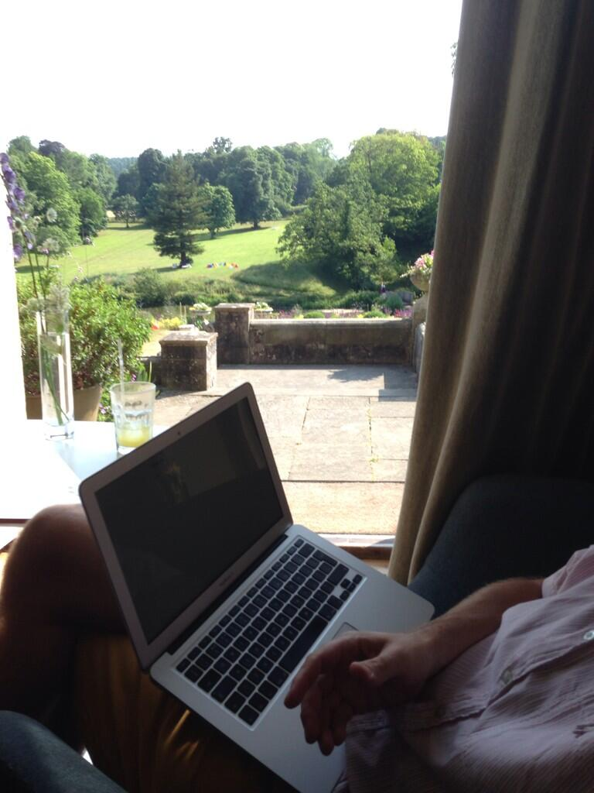
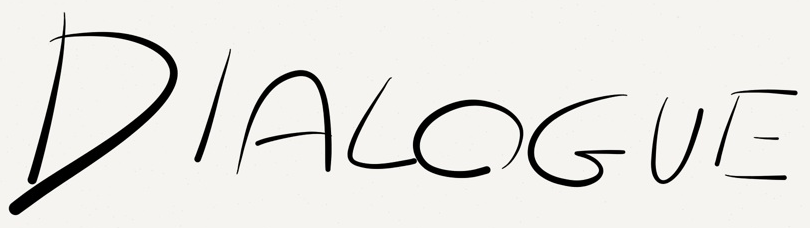

What Could You Do With 10 Years Of Continuous Improvement?
Who Am I?
- I spent 13 Years working on the same development team for a software house in London
- Their product Front Office is an "IT Services Interface" went through ASP, ASP.NET webforms to MVC5
- I've been blogging about my experiences for 5 years at "Diary of a Scrummaster"
- I'm now Freelance, working with different teams and still coding every day

Where Did We Start?
- Monolithic ASP Scripts
- "Just go and build it"
- Worked alone
- Each dev was assigned features, took weeks to months
- Worked from documents
- Shallow code reviews
- Long Test Periods, QA dept at opposite end of office
Lateness, Boredom, Frustration, Shrinking team
2003-2007: The Beginning
- .NET Webforms
- Team Lead leaves - less Command and Control
- Starting to collaborate, but coding alone
- More conscious of importance of quality
- Continuous Integration
- Unit testing - well we tried
Lateness, Learning, Frustration, Shrinking team
2008-2011: Scrum
- Autonomy! Self actualisation
- limiting WIP with a 3 week sprint
- Collaboration within the team - Daily standup, increasing amounts of pairing
- Reflection - Regular retrospectives and standups
- Predictable - Delivered on time
- Refactoring - Continuously + between sprints
- Problems: testing overrun, buglog, limited creativity?
Deliver within 4 weeks, Learning, Self Actualisation, What Next?
2011- Using Kanban to Improve
- MVC alongside webforms
- Abandoned fixed length sprint
- Set Coding WIP at 10 where it has roughly stayed - frequently hit
- Measured lead time - particularly around defects
- Focus on keeping work flowing
- Dropped estimation unless asked for
- QA & Devs work more closely
- Allowed changes to backlog at any time
- More collaboration outside team
Deliver within 2 weeks, Learning, Creativity, Wider Collaboration, less Us and Them

Many Developers Just Want To Code
But...
Effectiveness Requires Collaboration
Here's What Worked For Us
- Pair Programming
- Standups
- Retrospectives
Pair Programming
- Continually Questioning each others assumptions
- An extra conscience
- Reduce cognitive load leaves more space for creativity
Standups
- A time to raise frustrations
- A time to offer help/support
- A time to keep track of experiments
Retrospectives
- Identify Problems
- Generate Insight
- Devise Experiments
Here's What Worked For Us
Some People Wanted To Move To Their Country Residence
Here's What Worked For Us

Why Leave?
- Desire to take some risks
- Work with different people - people found it hard to leave
- Even with continuous improvement there is still baggage
So What did I learn?
I Noticed Most Improvement Came From Learning Faster Through

People Instinctively Feel Ineffectiveness
They Signal It With Frustration And Dispondency
Fear Is The Improvement Killer
People Signal It With Blame And Untrue Limiting Assumptions
Anti-Matter Principle
Attend to Folks' Needs
Bob Marshall (@flowchansensei)
Present a good team with problems & they'll thrive on finding solutions. Ask them to implement your solution & they'll only find problems.
Present a good team with problems & they'll thrive on finding solutions. Ask them to implement your solution & they'll only find problems.
Expose your dev team to the chaos of the outside world and ask them to find opportunities in the diversity
Discussion
What constrains improvement in your enviroment?
What can you do to remove those impediments?
What activities promote improvement?
What can you do to introduce those things in your environment?
Steps to continuous improvement
- Work problems together
- Take time to reflect
- Create space to experiment
- Listen
- Question limiting assumptions